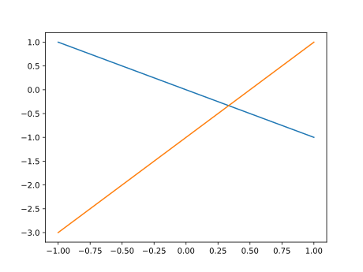

第1回：▶︎ 簡単なグラフを描く
■ 対話形式で使う
本文では、対話形式で、Julia を利用する。
Juliaをコマンドラインから利用している場合は、 プロンプト julia> が印字され、利用者の入力を待っている。
命令を打ち込み、ENTERキーを押すと、 その命令を計算(評価)した結果が印字される。
julia> 1
1上の例では、1 という文字の並びから、 1 という数を内部で作成し、 それを計算の結果として印字したのである。
計算機側から見ると、 利用者の入力を読み込み(Read)、 入力された命令を評価し(Eval)、 その結果を印字する(Print)ことを、繰り返す(Loop)。 この４つの頭文字をとって、 対話型利用のことを REPL とも呼ぶ。
Jupyter notebookを用いる場合には、 Code cellが表示されている。 ここに命令を打ち込み、SHIFT + ENTER キーを押すと、 その命令を評価した結果が出力される。
■ 電卓として使う
数と数との四則演算をしてみよう。
加算には + 、 減算には - の文字を使う。 乗算には * (アスタリスク astarisk と読む)、 除算には (% ではなくて) / (スラッシュ slash と読む)の文字を用いる。
julia> 1 + 2
3
julia> 3 * 4
12数式と同じように、乗算と除算は、加算・減算に優先する。 計算の順序を変えるには、括弧 ( と ) との組を用いる
julia> 2 + 3 * 4
14
julia> (2 + 3) * 4
20除算の結果は、小数となる。
julia> 2 / 2
1.0
julia> 1 / 3
0.3333333333333333
julia> 5 / 2
2.5■ 変数に値を代入する
値には、名前（名札、ラベル）をつけることができる。 この名前を変数といい、名前をつける操作を「値を変数に代入する」という。 変数には、色々な種類の値を代入できる。
変数を評価すると、変数の値となる。
julia> # 変数 x に 値 2 を代入する
x = 2
2
julia> # 変数 x の値を用いる
x + 1
3
julia> # 変数 x に 別の値 3 を再代入する
x = 3
3# はコメントである。 # から行末までの文字は全て無視される。
■ 変数名の規則
変数の名前（変数名)は、以下のようにつける。
変数名の最初の文字は、半角のアルファベット (aからzまで、AからZまで)、 または、下線（アンダースコア _)のいずれかでなければならない。 変数の2文字目以降は、さらに、半角の数字 (0から9)、 または、半角の感嘆符 ! を含めることができる。
半角文字とは「かな漢字変換機能」を用いずに、 キーボードから打ち込める文字と考えてよい。
変数名には、漢字やギリシャ文字などを使うことができるが、 ここでは説明を省略する (Allowed Variable Names を参照)。
今後出現する、定数、型、関数、マクロ、モジュール、パッケージの名前も、変数名の約束と同じである。 ただし、慣習として、以下のように使い分ける。
変数名は小文字で始める。
型、モジュール、パッケージの名前は大文字で始める。
関数やマクロの名前は小文字で始める。下線（アンダースコア
_)は用いない。
■ ベクトル
角括弧 [ と ] との間に、カンマ , で区切って 数を並べたものを、(数の)ベクトルという。
ベクトルは、縦に印字される (列ベクトル, column vector)。
julia> [1,3,2]
3-element Array{Int64,1}:
1
3
2変数に、ベクトルを代入しよう。
julia> xs = [1,2,2,1]
4-element Array{Int64,1}:
1
2
2
1
julia> ys = [1,1,3,1]
4-element Array{Int64,1}:
1
1
3
1本文筆者は、ベクトルなど複数の値を内部に含むデータの変数の名前を、複数形とすることが多い(末尾を sで終える)。そのデータの各要素を表す変数の名前を単数形とする。（大文字は定数などを表す約束だから）大文字と小文字で、ベクトルなどとその要素を区別することは避けた方がよい。
ベクトルのスカラー倍は、各要素に一定の数を乗ずる。
julia> xs * 2
4-element Array{Int64,1}:
2
4
4
2ベクトル同士の加減算には、演算子 .+ や .- を用いる。 +や-の前のピリオド . は「各要素に対する演算」を意味する。
julia> xs .+ ys
4-element Array{Int64,1}:
2
3
5
2
julia> xs .- ys
4-element Array{Int64,1}:
0
1
-1
0▶︎ 三角形を描く
グラフを描画するのに、PyPlot パッケージを導入しよう。
パッケージは、関連する関数、定数、変数などをまとめたものである。 using <<パッケージ名>> で導入できる。
plot 関数は、PyPlot パッケージに含まれる関数である。
plot(xs,ys) の形で用いて、 ベクトル xs, ys から一つづつ数を取り出して、 それらを各々 x座標, y座標とする点を打つことを命令する。
# PyPlot パッケージの導入
using PyPlot
xs = [1,2,2,1]
ys = [1,1,3,1]
# プロット
plot(xs,ys)◀︎ 練習
xs, ys の値を変えて、別の図形を表示させてみよ。
要素の数が等しくない場合は、どうなるか？
■ Range型
二つ、または、三つの数字をコロン(:) で区切ったデータは、 等差数列を表す (Range型)。
「型」とは「データの種類」である。詳しくは、後の節で述べる。
二つの数をコロン (:) で区切った量 a:b は、 aから 1づつ増やして、bを超えるまでの数からなる等差数列である。 三つの数をコロンで区切った量 a:b:c は、 aから b づつ増やして、cを超えるまでの数からなる等差数列である。
julia> 1:5
1:5
julia> xs=0:0.1:1
0.0:0.1:1.0Range型の量から、各要素を取り出してベクトルに変換するには、 collect関数を用いる。
julia> collect(xs)
11-element Array{Float64,1}:
0.0
0.1
0.2
0.3
0.4
0.5
0.6
0.7
0.8
0.9
1.0Range型をベクトルに変換してしまうと、元が等差数列であるという情報が消えてしまう。どうしても、ベクトルでないと困る場合だけ、ベクトルに変換しよう。
Range型を保ったまま、各要素をスカラー倍したり、 各要素に一斉に同じ数を加えたり引いたりできる。
julia> # 各要素を 2倍する
xs * 2
0.0:0.2:2.0
julia> # 各要素に 1 を加える
xs + 1
1.0:0.1:2.0
julia> # 各要素から 0.2 を引く
xs - 0.2
-0.2:0.1:0.8Range型に、ピリオド付きの演算子 .*, .+, .- を適用すると、 その結果は、Range型でなく、ベクトルになってしまう。
julia> ys=0:0.25:1
0.0:0.25:1.0
julia> # 各要素を 2倍する
ys .* 2
5-element Array{Float64,1}:
0.0
0.5
1.0
1.5
2.0
julia> # 各要素に 1 を加える
ys .+ 1
5-element Array{Float64,1}:
1.0
1.25
1.5
1.75
2.0
julia> # 各要素から 0.2 を引く
ys .- 0.2
5-element Array{Float64,1}:
-0.2
0.05
0.3
0.55
0.8▶︎ 式のグラフを描く
plot関数に対して、二つのコレクション xs、ysを渡すと、 xs、ys から一つづつ要素を取り出し、 これらを x, y 座標とする点を結んで、図形が描かれるのであった。
式のグラフを描くには、ysとして、 xs から計算した値を与えればよい。
二つの直線 $y=-x$ と $y=2x-1$ のグラフを描いてみよう。
# PyPlot パッケージの導入
using PyPlot
xs=-1:0.1:1
# プロット
plot(xs,-1*xs)
plot(xs,2*xs-1)
◀︎ 練習
別の直線を描いてみよ。
★ 今回のまとめ
対話形式の使い方
数の四則演算
PyPlotパッケージを用いた図形とグラフの描画
ベクトルと等差数列